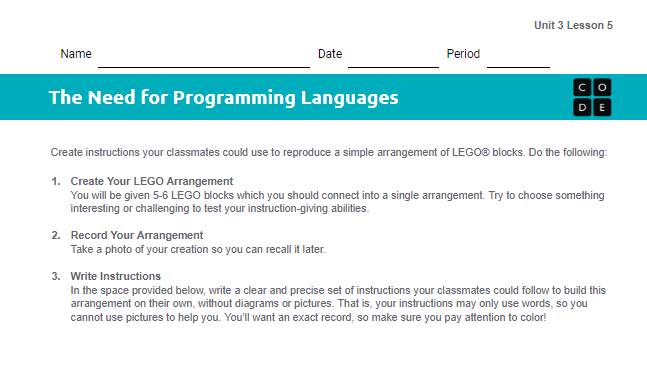
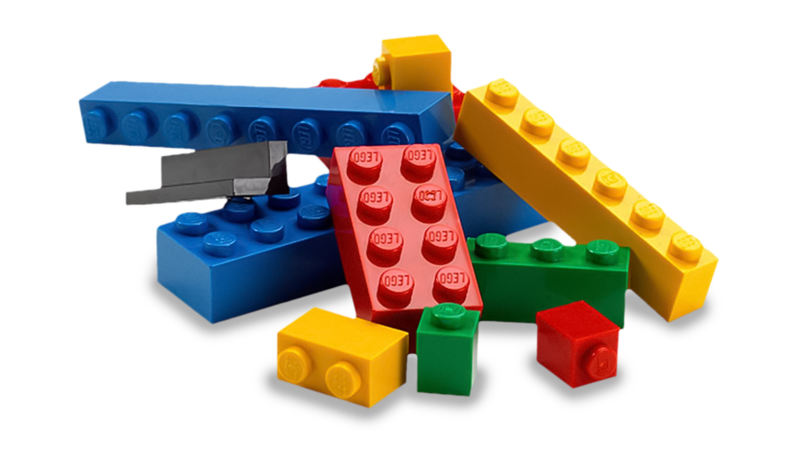

We all use instructions all the time: directions to get somewhere, steps to fill out a form, even directions from a teacher. To help us get started, let’s brainstorm what makes a set of instructions bad.
What are at least three different reasons you would call a set of instructions bad?
Now that we have an idea of what bad instructions look like, let’s use that brainstorm to help us write good instructions in the next activity.


Make a structure using at least five LEGO pieces. All of the pieces should be connected.
When you finish, take a picture of your completed structure and paste it into your activity guide.
Create an algorithm for building your structure. Write instructions on the handout that someone else could follow to recreate it.
Be clear and precise. Use only words: no drawings, no diagrams, no pictures.
Dismantle your structure and place the pieces on top of the handout. Swap places with someone from another table.
Try to follow the instructions provided to recreate their structure, while they try to follow yours to recreate yours. As you work, highlight or circle any instructions that are unclear, confusing, or difficult to understand.
When your partner finishes their recreation, take a picture of it and paste it into your activity guide. Don’t forget to give them credit by putting their name in the appropriate box.
Show your partner the picture of the original version. Discuss the results of each recreation, then look at any highlighted instructions and talk about how they could be made better. Repeat with two other people.
Paste your pictures into the electronic version of your activity guide. You should end up with four pictures: your original structure and three recreations of it.
Continue on to complete the reflection questions.
When you or your partner made mistakes following instructions today, what “went wrong”? Try to be as specific as possible.
Imagine we were going to redesign human language to be really good at giving clear instructions. What types of changes would we need to make?
What do you think the difference is between a programming language and a natural, everyday language?